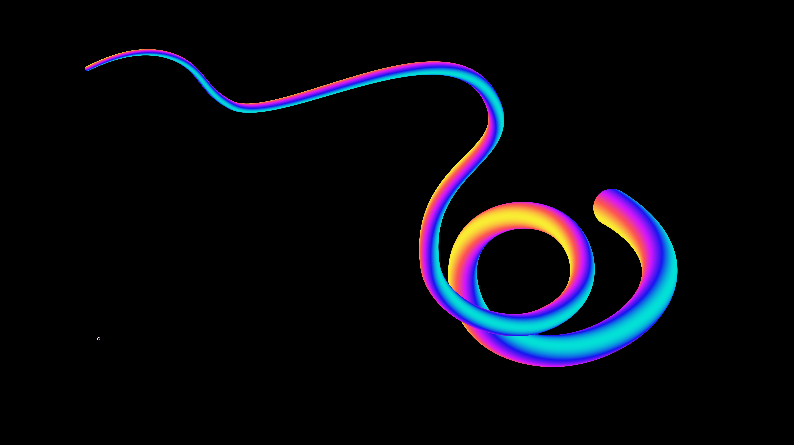
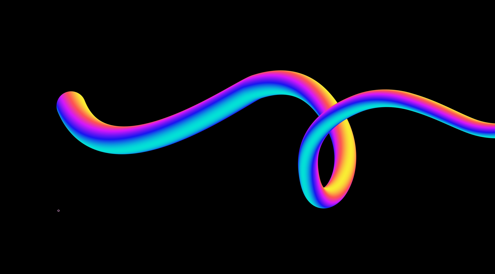
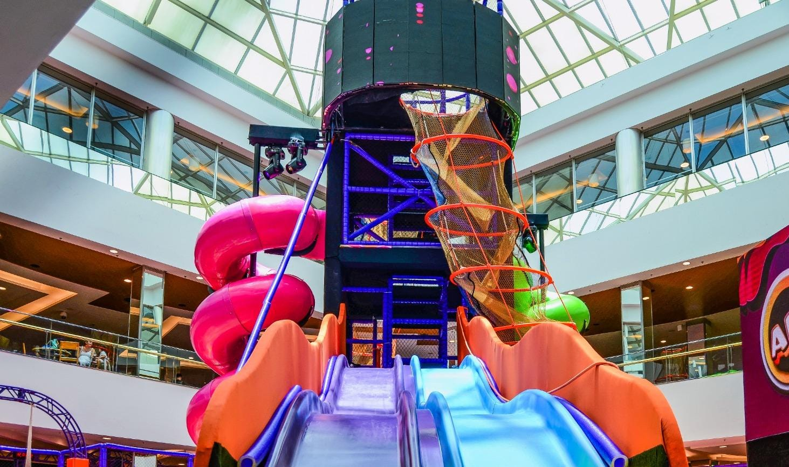
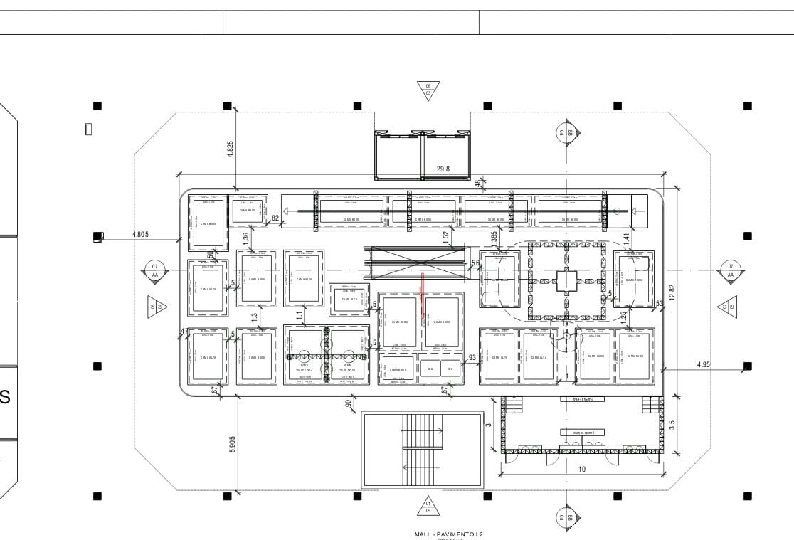
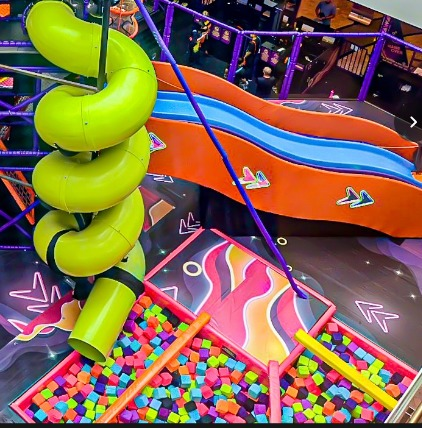

Seu corpo é
o controle.
O app oficial da Arena Trampolim transforma cada pulo em jogo. Inclina, gira, salta — os sensores do celular detectam tudo e respondem em tempo real. Sem botão, sem touch. Só você se mexendo.

Três experiências feitas para serem jogadas em movimento.
Foam Strike
Acerte os cubos de espuma na piscina de espuma. Cada acerto pontua. Quanto mais rápido você se mexer, mais pontos faz.
Piscina de espumaTube Slide
Desça o tobogã coletando itens. O giroscópio detecta sua inclinação real e move o personagem na tela conforme você desce.
TobogãV-Platform Walk
Atravesse a passarela em V coletando itens flutuantes. Use o equilíbrio do seu corpo para guiar o personagem sem cair.
Passarela
O parque ganhou uma camada de jogo.
A Arena Trampolim é um parque indoor de trampolins, tobogãs e piscina de espuma. O app oficial usa os sensores do celular — acelerômetro e giroscópio — para transformar suas atrações favoritas em minigames de pontuação.
Cada pulo, cada inclinação, cada movimento vira input no jogo. Sem precisar olhar pra tela o tempo todo. Sem perder o foco na diversão real.
Disponível em breve para Android e iOS, gratuito e sem coleta de dados pessoais.

Sem AR. Sem touch. Só o movimento.
Escolha o minigame
Selecione no app o jogo correspondente à atração onde você está no parque.
Guarde o celular
Coloque o celular no bolso ou pulseira. A partir daqui, o app lê só os sensores.
Mexa-se
Pule, deslize, gire. O acelerômetro e giroscópio fazem o resto. Seu placar acumula.
Veja o resultado
No fim de cada rodada, confira pontuação, recordes e suba no ranking.
Atrações reais. Jogos digitais.


Pronto para jogar com o corpo todo?
App em fase final de desenvolvimento. Em breve disponível na Google Play e na App Store.